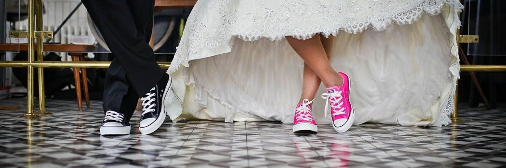

Feiern & Tagen
Heiraten, tagen,
einkehren
Ein Festsaal für bis zu 250 Personen, drei Seminarräume mit kompletter Technik und ein Haus, das Busgruppen in kurzer Zeit versorgt – alles aus einer Hand.

Heiraten beim Profi
Hochzeit beim Wirt im Feld
Ob kleine oder große Hochzeit, ob standesamtliche oder kirchliche Trauung – der schönste Tag im Leben verlangt sorgfältige Planung und Vorbereitung. Dabei möchten wir Ihnen gerne helfen.
Seit über 100 Jahren begleiten wir Feste in diesem Haus. Vertrauen Sie unserer Erfahrung.
Unser Hochzeitssaal
Unser großer Festsaal ist für Hochzeitsfeiern bis zu 250 Personen bestens geeignet. Eine Schiebewand gewährleistet ein ruhiges, gemütliches Ambiente auch für kleinere Veranstaltungen und Feste.
| Saal | Kapazität |
|---|---|
| Festsaal | bis zu 250 Sitzplätze |
| Saal „Steyr“ | bis 100 Personen |
| Saal „Enns“ | bis 120 Personen |
Auf der gedruckten Speisenkarte wird der Veranstaltungssaal mit 220 Personen angegeben – die genaue Bestuhlung hängt von Tafelform und Bühne ab.
Das Wirt-im-Feld-Package
Bei uns bekommen Sie alles aus einer Hand: Hochzeits-Location, Hochzeitsmahl, Nächtigungsmöglichkeit für Ihre Gäste und Brautstehl-Location. Das heißt für Euch: kein externer Caterer nötig, keine Raummiete, kein langwieriges Suchen von Übernachtungsmöglichkeiten, kein Shuttle-Dienst, kein Wegfahren zum Brautstehlen.
- Individuelle Beratung und Rund-um-die-Uhr-Service direkt von den Chef-Leuten
- Konzertflügel
- Moderne Musikanlage inkl. Mikrofon
- Modernes Lichtmanagement
- Beamer mit großer Leinwand
- Echter Parkett-Tanzboden
- Abtrennbare Bereiche
- „Erdäpfelkeller“ als perfekte Brautstehl-Location
- Barrierefreier Zugang zum Festsaal
- Behindertengerechte Zimmer und WC
- Kinderspielplatz und große Kinderspielecke
- Spezielle Kindermenüs
- Überdachter Gastgarten
- Platz für Spiele und Geschenkübergaben im Freien
- Genügend gratis Parkmöglichkeiten
Gemeinsam. Erfolgreich.
Seminare, Workshops und Schulungen
Unsere Räume
- Seminarraum „Enns“
- Seminarraum „Steyr“
- Seminarraum „Dietach“
- Kombination „Enns“ + „Steyr“
Unsere Technik
- 3 Beamer
- Elektrische Leinwand
- Mobile Leinwand
- Flipcharts und Pinnwände
- Stifte und Moderationskoffer
- Tonanlage und Funkmikrofon
- W-LAN
- Genügend Steckdosen und Kabel
Pauschalen
Wir bieten ganztägige Seminare mit Übernachtung, Tagesseminare und Halbtagsseminare an.
Die Seminarpreise gibt es auf Anfrage – wir kalkulieren nach Gruppengröße, Raum und Verpflegung.
Ganztägiges Seminar mit Übernachtung
- Tagungsraum inkl. Technik, Bestuhlung und Tagungsgetränke
- 2 Kaffeepausen mit kleinen Snacks (Obst und Joghurts, vormittags belegte Brötchen, nachmittags Kuchen und Plundergebäck)
- 2-gängiges Wahlmenü mittags (exkl. Getränke)
- 3-gängiges Wahlmenü abends (exkl. Getränke)
- Übernachtung im Komfortzimmer
- Reichhaltiges Frühstücksbuffet
- Kostenfreies W-LAN
- Kostenfreier Hotelparkplatz
- Kostenlose Nutzung von Sauna und Infrarotkabine
Das Tagesseminar und das Halbtagsseminar enthalten den Tagungsraum inkl. Technik, Bestuhlung und Tagungsgetränke sowie eine Kaffeepause mit kleinen Snacks (Obst und Joghurts, vormittags belegte Brötchen). Preise auf Anfrage.
Feste feiern
Firmenfeier, Geburtstag, Verein
Was für Hochzeiten gilt, gilt für jedes Fest: Räume in vier Größen, Küche und Schank im Haus, Zimmer für die Gäste und Parkplätze vor der Tür.
Vom Stubenabend bis zur Veranstaltung im Festsaal stellen wir Ihre Feier zusammen – inklusive abtrennbarer Bereiche, Technik, Tanzboden und Kinderbetreuungsecke.
Einkehrgasthof seit 300 Jahren
Busse & Gruppen
Busgruppen sind bei uns herzlich willkommen. Unser flinkes, mit modernster Mobilbestelltechnologie ausgerüstetes Service und die preiswerte, vielfältige Küche versorgen einen Bus in kurzer Zeit.
Unsere 4 Stuben sowie der große Biergastgarten eignen sich hervorragend für Gruppen aller Art. Die verkehrsgünstige Lage in Oberösterreich macht unseren Landgasthof zu einem idealen Ausflugsziel für Busgruppen.
Ihre Vorteile
- Ideale Verkehrslage am Stadtrand von Steyr und zur Autobahn A1
- Großer Busparkplatz direkt beim Eingang
- Buschauffeur und Reiseleiter konsumieren bei uns kostenlos
- Motiviertes, freundliches, flinkes Servicepersonal
- Moderne Bestelltechnologie für flottes Servieren
- Vielfältiges, individuelles Küchenangebot
- Jahrzehnte Erfahrung als Einkehrgasthof
- Wir garantieren den kulinarischen Erfolg Ihres Ausflugs
Spezielle Gruppenpreise auf Anfrage.
Ausflugstipps
Gerne beraten wir Sie persönlich und stellen Ihr individuelles Programm zusammen – von der Steyrer Altstadt bis in den Nationalpark Kalkalpen.
Sagen Sie uns Ankunftszeit, Gruppengröße und gewünschte Verpflegung, dann bereiten wir Stuben oder Biergastgarten entsprechend vor.